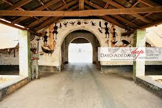

Alaafin Of Oyo Palace
Alaafin of Oyo as he is referred to is a powerful Yoruba monarch whose reign in the 17th to 18th centuries was vast. He ruled the Oyo Empire which extended from the present day Benin to Nigeria originating from states in the South East and West to the North. The people under him are called the Yoruba people and speak the Yoruba language. The Alaafin of Oyo is said to according to Yoruba mythology and history is said to have originated from Oduduwa the progenitor of the Yoruba race.[1] and present-day Oyo town of West Africa.[2] It is "emperor" in the context of ruler of empire. He ruled the Oyo Empire, which extended from the present-day Benin republic to Nigeria, originating from states in the South East and West to the North. The individuals under him are Yoruba people who speak the Yoruba language. Yoruba is widely spoken in various regions, such as Egba, Ijebu, Ekiti, Ijesha, Ile-Ife, and Eko, each with its own minor dialects. In mythology and history, the Alaafin of Oyo, Oranyan, is said to be son of [Oduduwa]. He migrated from Ile-Ife to Oyo, where he became the king and laid the foundation for Yoruba Civilization.[1]. Ultimately, he returned to his origin, Ile-Ife, where he also ruled as king and eventually passed away. The Alaafin and the Oyo Mesi formed the central government of the empire. Local provincial government was in the hands of oba (if crowned head) or bale (if not entitled to wear a crown).[3] The relationship between the Alafin and the Obas was a feudal one, that is for his rule and protection, the Obas, the Baales and chiefs of vassal states owed him certain obligations.[4] By the early 1800s. The Present Alaafin of Oyo is His Imperial Majesty, Oba, Akeem Owoade I who succeeded the late Oba Lamidi Adeyemi III, the 45th Alaafin, The style used for Alaafins is Imperial Majesty.
Ooni Of Ife Palace
His Imperial Majesty (HIM), Oba, Dr. Adeyeye Enitan Babatunde Ogunwusi, Ojaja, II. , was born 40 years ago into the family of Ropo and Margaret Ogunwusi. He is from the Ojaja ruling Compound of the Giesi ruling house of Ile-Ife. Many years before the birth of the young Ooni, it was predicted that a child of prominence that would impact the lives of mankind would be born into the family at exactly 1pm. Indeed, Adeyeye came into this world at exactly 1pm on a Thursday, the 17th of October, 1974. With the news of the arrival of a new born prince, he was specifically named Adeyeye by his grandfather Pa. Joseph Olagbaju Adewole Ogunwusi Jnr. The name Adeyeye in English translates to ‘A Crown Befitting for a King’; Pa Ogunwusi on setting his eyes on the new born prince began to call him Adeyeye Ooni from that very day till he passed away. Ooni Adeyeye Enitan Ogunwusi is the 5th direct descendant of the Giesi Ruling Family (Ooni Ojaja Orarigba – Ayikiti ninu Aran reigned from 1878-1880, he was the 44th Ooni of Ile-Ife to rule. He begat Adegosan Adewole Ogunwusi, who was an extremely powerful prince in Ile-Ife and a war veteran that never lost any battle for Ile-Ife and the Yoruba race. He begat Pa Joseph Olagbaju Adewole Ogunwusi (Jnr.), a very bold prince who took after his father. He begat Prince John Oluropo Ogunwusi, a radio and television anchor and star presenter that spanned the entire mid-1980s to early 21st century in the South-Western part of Nigeria. He begat Prince Adeyeye Enitan. Ooni Adeyeye Enitan Ogunwusi was quietly delivered into the humble family of Prince Ropo and late Margaret Wuraola Ogunwusi (Ile Opa family compound, Ile-Ife). Like the proverb, “A golden fish has no hiding place”, Ooni Ogunwusi’s excellence and outstanding acumen would soon start to announce itself for the world to see. Ooni Adeyeye is best described as an astute entrepreneur driven by turning impossibilities to ‘possibilities’. The Young Ooni’s power of imagination has set him aside, hence, revolutionizing his approach to creativity and innovation. He is a distinct achiever with the conscience of youthful excellence. The ambitious Ooni with exceptional business ideas delved into Engineering, Procurement and Construction (EPC) locally and abroad for over 12 years. He is also actively involved in the development of over 2,500 housing units with various consortia of developers within the last 8 years. In Nigeria, he set up and fostered strong trade relationships through the Association for International Business (AIB) with presence in over 200 member countries across the globe. One of the laudable achievements of this body includes the trade facilitation between the United Arab Emirates (Jebel Ali Free Trade Zone Development) and the Federal Government of Nigeria through the Nigeria Investment Promotion Commission (NIPC). Furthermore, Ooni Adeyeye Enitan Ogunwusi led the Government delegation to Canada in 2002 that promoted strategic alliances through a partnership with the Ondo State Government on solid mineral (Bitumen, Dimension Stones, Granite, etc.) potentials of the state, which gave rise to the formation of the ‘Amalgamated Mining and Exploration Company Limited’ – wholly owned by the Ondo State Government. In addition, he facilitated the development of Sparkwest Steel Galvanizing Plant (the only steel Galvanizing Plant in Nigeria), National Iron Ore Mining Company Limited and Jakura Mines resuscitation projects, which has eventually become the major limestone feedstock to Obajana Cement Plant in Kogi State, Nigeria.
Olubadan Of Ibadan Palace
Ibadan was founded in the 16th century, but the present Yoruba people only took control around 1820. By 1850, they had established their unusual succession principle, which is quite different compared with other traditional Yoruba rulers in that it alternates between two lines. It usually takes decades to groom an Olubadan for the stool through stages of chieftaincy promotion, thus meaning that just about any male born title-holder of the metropolitan centre is a potential king. History According to the outline history of Ibadan by Oba Isaac Akinyele, Ibadan was founded in the 18th century. Around 1820, an army of Egba, Ijebu, Ife and Oyo people won the town during their wars with the Fulanis. After a struggle between the victors, the Oyo gained control in 1829. A system where the Baale line (civic) and Balogun Isoriki line (military) shared power was established by 1851, subject to a traditional council representing both lines. In 1885, the Royal Niger Company became effective rulers of the area, signing treaties with local powers such as the Olubadan, and in 1900, the British government formally assumed authority over Nigeria as a "Protectorate". The British created the Ibadan Town Council in 1897, using the traditionally powerful local chiefs to administer their town. In 1901, the Governor Sir William MacGregor introduced an ordinance whereby the Baale became the president of the Council while the Resident was only to advise when necessary (Rulers of Ibadan were generally referred to as Baale until 1936, when the title of Olubadan was resuscitated). [1]